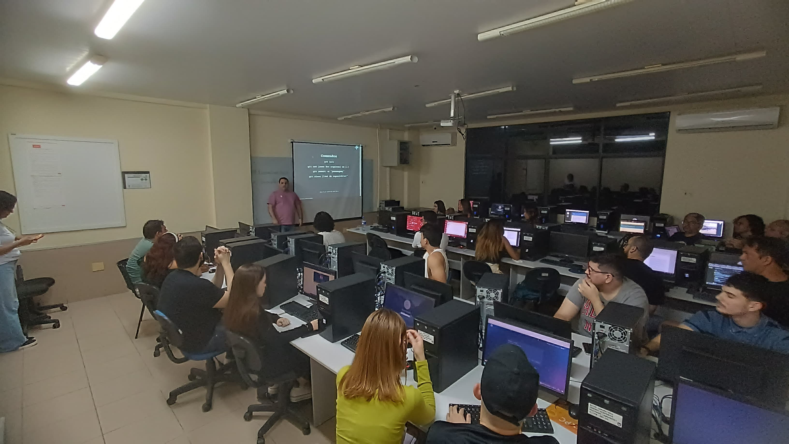

BootCamp: Git e Github na Prática
Nos dias 19 e 20/10, durante o maior evento universitário de João Pessoa, o famosos INOVA UNIESP,
o grupo Turmalinas Tech em parceiria com o palestrante Jerson Brito, promoveu o BootCamp de Git
e Github na prática, onde muitos alunos poderam aprender, com interatividade, mais sobre os
comandos Git.
Turmalinas Tech Day
O Turmalinas Tech Day, realizado no dia 28/10, foi um evento pensado para servir de estimulo para as mulheres
em relacionado a atuação feminina nas áreas de T.i.
O evento foi repleto de alegria e motivação. Contando com palestrantes incríveis, compartilhamento de insights
sobre qualidade de software, inteligência artificial e desmistificação do trabalho remoto.